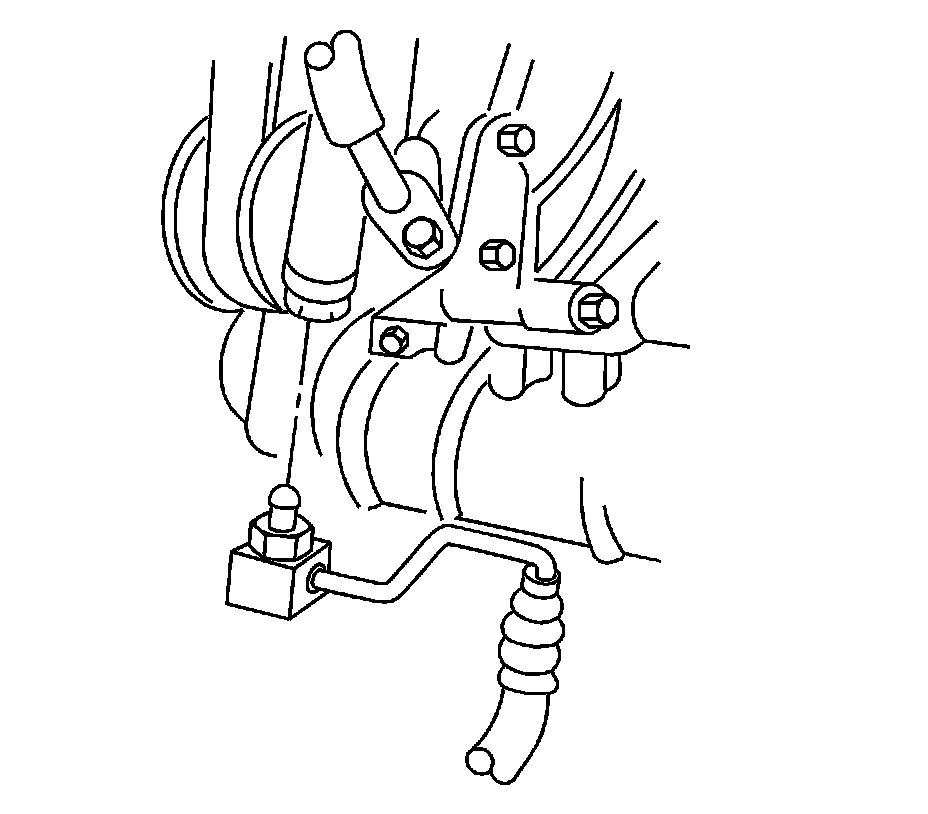
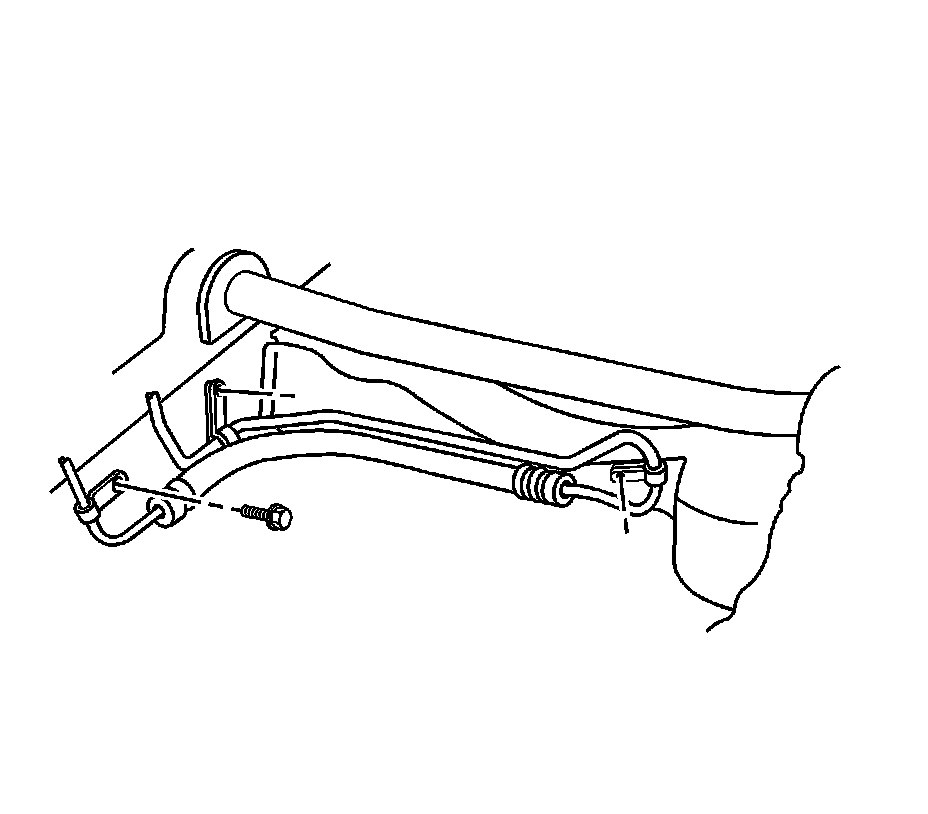
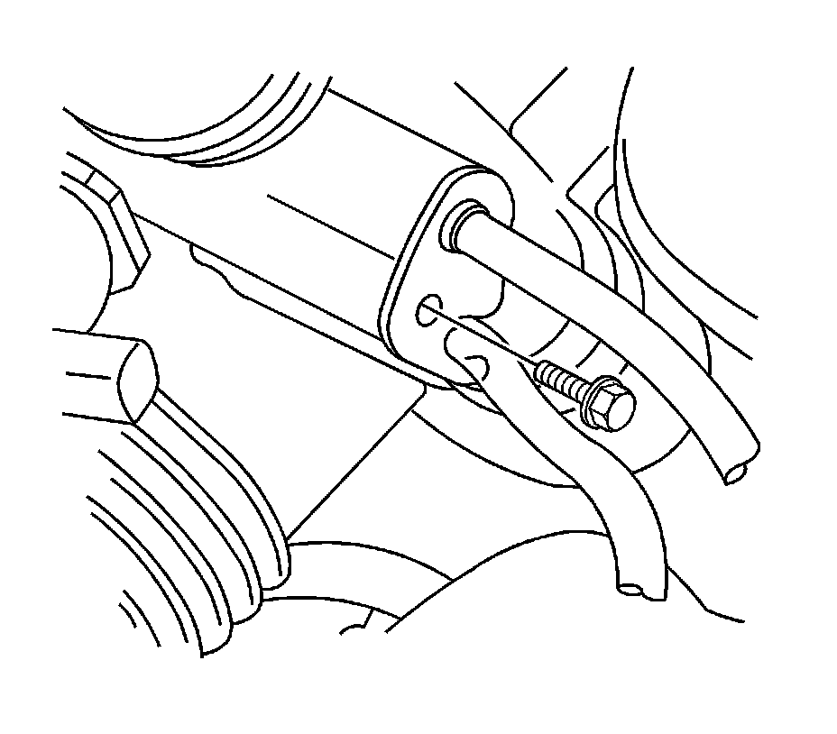
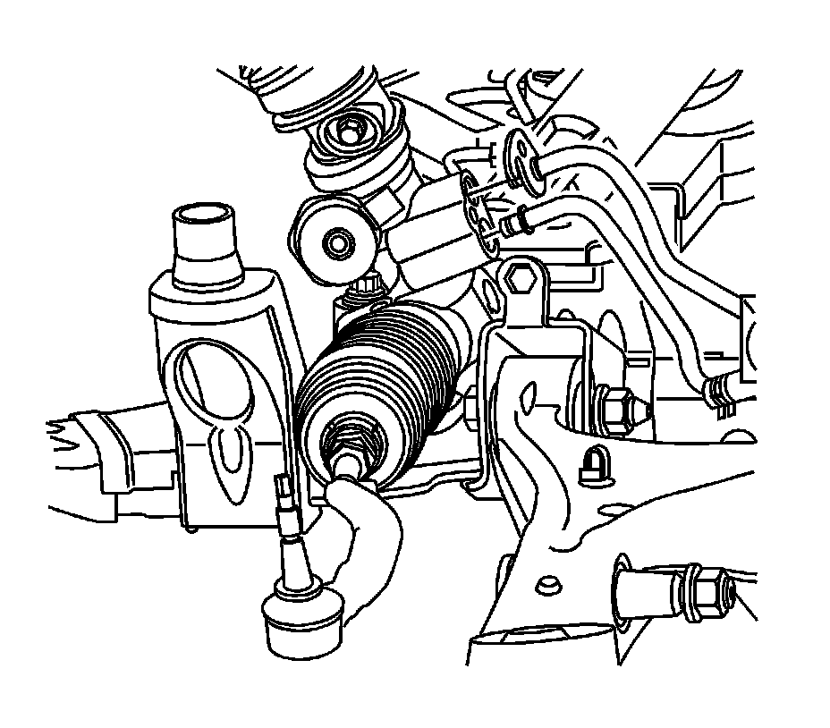

Power Steering Gear Inlet Pipe/Hose Replacement (Right Hand Drive)
Power Steering Gear Inlet Pipe/Hose Replacement (Right Hand Drive LH2)
Removal Procedure
1. Remove the air cleaner assembly. Refer to Air Cleaner Assembly Replacement (Service and Repair) .
2. Remove as much power steering fluid from the remote power steering fluid reservoir as possible.
3. Remove the front air deflector. Refer to Front Air Deflector Replacement (Service and Repair) .
4. Remove the left side front bumper fascia extension. Refer to Front Bumper Fascia Extension Replacement - Left Side (R1T, R1X) (Front Bumper Fascia Extension Replacement - Left Side (R1T, R1X)) .
5. Place drain pans under the vehicle as needed.

6. Remove the power steering gear inlet hose bracket nut (not shown) from the back of the power steering pump.
7. Disconnect the power steering gear inlet hose from the power steering pump.

8. Remove the power steering gear inlet and outlet hose retaining bolts.
9. Lower the rear of the front frame to make room for removing the power steering gear inlet hose. Refer to Front Frame Replacement (Front Frame Replacement) .

10. Remove the power steering gear inlet hose bracket bolt.

11. Disconnect the power steering gear inlet hose from the steering gear.
12. Remove the power steering gear inlet hose from the vehicle.
Installation Procedure
1. Install the power steering gear inlet hose to the vehicle.
2. Connect the power steering gear inlet hose to the steering gear.
Notice: Refer to Fastener Notice (Fastener Notice) .
3. Install the power steering gear inlet hose bracket bolt.
Tighten the bolt to 23 N.m (17 lb in).
4. Restore and tighten the front frame. Refer to Front Frame Replacement (Front Frame Replacement) .
5. Install the power steering gear inlet and outlet hose retaining bolts.
Tighten the bolts to 10 N.m (89 lb in).
6. Connect the power steering gear inlet hose to the power steering pump.
7. Install the power steering gear inlet hose bracket nut (not shown) to the back of the power steering pump.
Tighten the fitting to 9 N.m (80 lb in).
8. Clean any excess power steering fluid from the vehicle and remove the drain pans.
9. Install the left side front bumper fascia extension. Refer to Front Bumper Fascia Extension Replacement - Left Side (R1T, R1X) (Front Bumper Fascia Extension Replacement - Left Side (R1T, R1X)) .
10. Install the front air deflector. Refer to Front Air Deflector Replacement (Service and Repair) .
11. Install the air cleaner assembly. Refer to Air Cleaner Assembly Replacement (Service and Repair) .
12. Fill and bleed the power steering system. Refer to Power Steering System Bleeding (Service and Repair) .